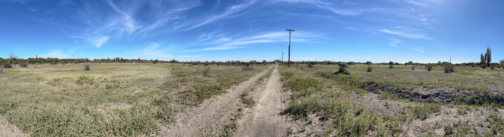
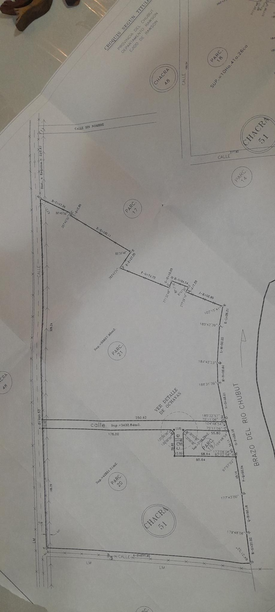

Dos macizos forestados sobre el brazo del río Chubut
A 5 km, diez minutos del casco urbano de Rawson. 9,85 ha con frente a calle con energía eléctrica, gas y agua, para vender en cuatro fracciones de aproximadamente 2,5 ha, sin loteo.
- Parcela 21
- Parcela 20
- Zona baja
Los dos macizos
Parcelas 21 y 20 de la Chacra 51, Departamento Rawson, según croquis de título. Los límites del mapa son orientativos; rigen las medidas del plano de mensura.
- Parcela 21
- 55.657 m² · 5,57 ha
- Parcela 20
- 42.851 m² · 4,29 ha
- Total
- 98.508 m² · 9,85 ha
- Frente
- Calle con red de agua, energía eléctrica y gas
- Fondo
- Brazo del río Chubut
- Terreno
- Forestado
- Distancia
- 5 km del casco urbano de Rawson · 10 minutos
- Zona baja
- Unos 3.500 m² dentro de la parcela 21, marcados en rojo en el mapa
El terreno
Fotografías tomadas en los macizos: arboleda de álamos, pastizal y la calle de frente con el tendido eléctrico.

Plano de mensura
Croquis según título. Toque la imagen para ampliarla.

Fraccionamiento sin loteo
Cada macizo se divide en dos fracciones. El valor de cada una se informa por consulta.
| Fracción | Origen | Superficie aprox. | Valor |
|---|
Superficies indicativas, resultado de dividir cada parcela en dos. La superficie y los límites definitivos surgirán de la mensura y la división que corresponda ante los organismos competentes. Las condiciones de escrituración se informan al consultar.
Consultas
Solicite el plano, el KMZ y las condiciones de venta de cada fracción.